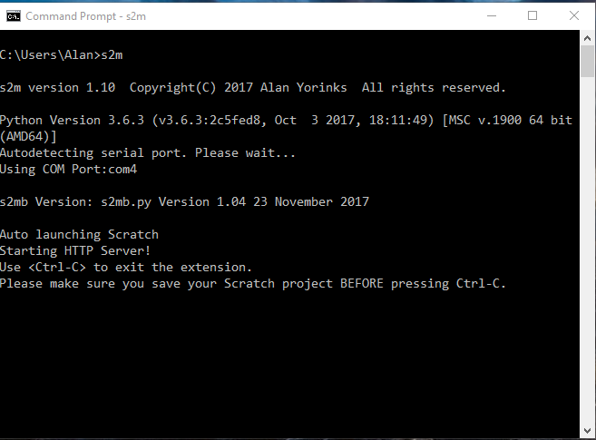
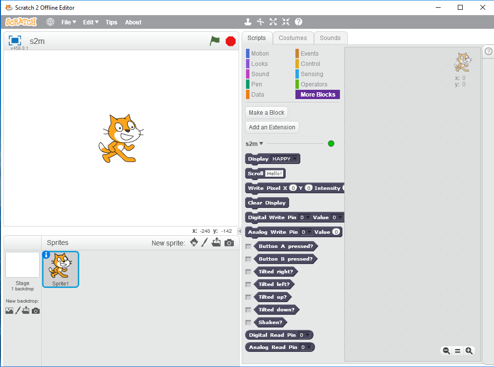
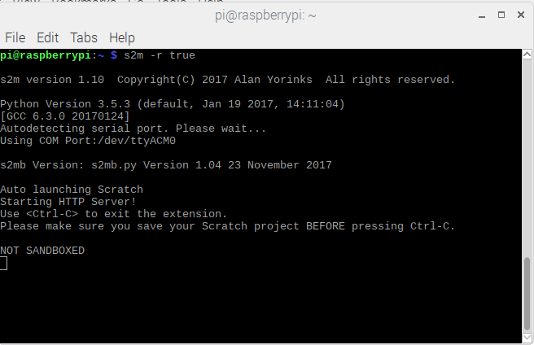
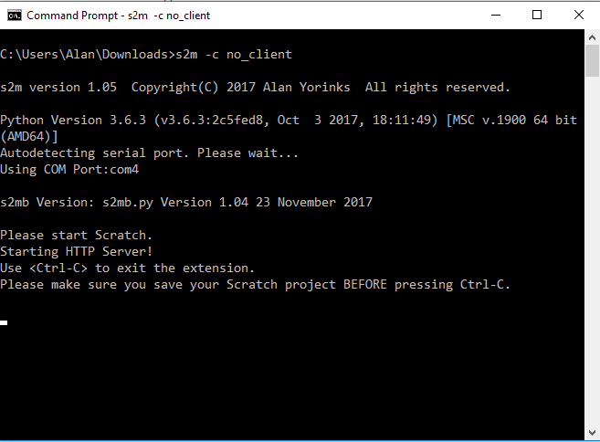

Starting s2m On Windows, Mac and Linux
Make sure that your micro:bit is plugged into a USB port on your computer.
Next, open a command or terminal window and type:
s2m
To load a translated set of blocks, use the -l option. For example, to load the Japanese blocks, enter:
s2m -l 1
The command window should display something similar to this:

The program begins by announcing s2m's version number and thePython version in use.
Next, s2m attempts to auto detect the communication port the micro:bit is connected to and announces the port found.
It detects and announces the version of micro:bit script s2mb.py that was flashed to the micro:bit.
It then launches Scratch and you should select the More Blocks tab to view the s2m blocks.
When the connectivity indicator on the Scratch editor turns green, the program is ready to be used.

Starting s2m On The Raspberry Pi
Open a terminal window and type:
s2m -r true
See the previous section for a description of the console output.

Command Line Options
Some program defaults can be overridden at startup using command line options.

The BASE_PATH option allows you to override where s2m looks for its files. The standard
BASE_PATH is the Python path printed when s2m first starts up.
For example:
s2m -b c:\users\alan\appdata\local\programs\python\python36\lib\site-packages/s2m
The CLIENT option allows you to manually launch Scratch. This is mainly used for debugging. To manually launch Scratch enter:
s2m -c no_client
The DISPLAY option will print the path to the s2m operational files. You may display the BASE_PATH that is currently in use by entering:
s2m -d true
Once displayed, s2m will exit.
By default, s2m launches Scratch with the extension blocks in English. To launch using one of the supported translations, use the LANGUAGE option. Each translation is assigned a language ID number and used to select the correct language blocks. For example to select the Japanese translation, enter:
s2m -l 1
The COMPORT option allows you to manually specify which communications port the micro:bit is connected to.
For example, to select COM2, start s2m with:
s2m -p COM4
The RPI option is used when running s2m on a Raspberry Pi. To start s2m on the RPi, type:
s2m -r true
The SCRATCH_EXEC option allows you to specify the full path and Scratch executable name if Scratch was not installed into the standard install directory.
For example:
s2m -s C:\Users\Alan\Desktop\Scratch 2.exe
Creating A Windows Desktop Icon For Quick Start Up
If you would like to create a Windows desktop icon for s2m, open your favorite text editor and enter the s2m command adding any command line options that you might need, and save the file as s2m.bat in the Desktop directory. You should then see an s2m.bat icon appear on your desktop.
Shutting Down
Before shutting down, make sure to save your Scratch project. To shutdown, press Control-C in the command window. This will close both s2m and Scratch.
Manually Starting s2m and Scratch
Manual Start: Step 1
Download the s2m Scratch project file, s2m.sb2, by going to the following URL in your Web browser
https://github.com/MrYsLab/s2m/blob/master/s2m/scratch_files/projects/s2m.sb2
Click on "View Raw" to download the file
Manual Start: Step 2
Start s2m with the following command:
s2m -c no_client
You should then see something like this on your screen:

Manual Start: Step 3
Next, start Scratch up manually, then select File/Load from the Scratch menu. and load the file you downloaded in step 1.
Manual Start: Step 4
If you now go to the More Blocks tab in Scratch, you should see micro:bit blocks appear in the editor.
You are now ready to start programming.